건설기계설비산업기사 (2010-05-09 기출문제)
1과목: 기계제작법
1. 제품의 허용오차가 ±0.002 ~ ±0.0⑤mm 정도의 정밀도를 갖는 보링머신으로 주로 항온항습실에서 사용하는 보링머신은?
- 정밀보링머신
- 지그보링머신
- 코어보링머신
- 심공보링머신
(정답률: 알수없음)

2. 소성가공에서 바우싱거 효과(Bauschinger effect)란 무엇인가?
- 시간과 더불이 변형률이 커져가는 현상이다.
- 외력을 제거한 후 시간의 경과에 따라 잔류변형이 감소하는 현상이다.
- 금속재료가 먼저 힘의 방향과 반대방향으로 힘을 받을 경우 탄성한도나 항복점이 저하되는 현상이다.
- 금속재료여서 한번 어떤 방향으로 소성변형을 받으면 같은 방향으로 소성변형을 일으키는데 대하여 저항력이 증대하여 간다는 현상이다.
(정답률: 알수없음)
3. 업셋(up set) 작업에 대하여 올바르게 설명한 것은?
- 단면적을 크게 하여 길이를 줄인다.
- 단면적을 작게 하여 길이를 늘인다.
- 단면적을 크게 하여 길이를 늘인다.
- 단면적을 작게 하여 길이를 줄인다.
(정답률: 알수없음)
4. 빛의 간섭 현상을 이용한 측정기는?
- 공구 현미경
- 오토콜리메이터(autocollimator)
- 촉침식 표면 거칠기 측정기
- 옵티컬 플랫(optical flat)
(정답률: 알수없음)
5. 각도 측정기에 해당 되지 않는 것은?
- 탄젠트 바
- 스탭 게이지
- 수준기
- 요한슨식 각도 게이지
(정답률: 알수없음)
6. 사인 바(sine bar)의 크기를 나타낸 것 중 맞는 것은?
- bar의 길이
- 평행면의 길이
- roller의 길이
- roller의 중심거리
(정답률: 알수없음)
7. 항오변태곡선(TTT 곡선)과 관계가 먼 것은?
- 재결정온도
- 변태
- 시간
- 온도
(정답률: 알수없음)
8. 전기도금의 반대현상으로 가공물을 양극, 전기저항이 적은 구리나 아연 등을 음극으로 전해액 속에 전기를 통해 전기를 이용한 화학작용으로 가공물의 표면이 용출되어 필요한 형상을 만드는 가공법은?
- 초음파가공
- 전해연마
- 방전가공
- 화학연마
(정답률: 알수없음)
9. 호빙 머신의 차동기어장치는 어느 것을 가공할 때 사용하는가?
- 헬리컬기어를 가공할 때
- 베벨기어를 가공할 때
- 스퍼기어를 가공할 때
- 나사를 가공할 때
(정답률: 알수없음)
10. 일반적인 리벳(rivet) 작업용 공구가 아닌 것은?
- 리머(reamer)
- 스냅(snap)
- 해머(hammer)
- 드리프트(drift)
(정답률: 알수없음)
11. 주물사의 구비 조건으로 거리가 먼 것은?
- 내화성이 클 것
- 화학적 변화성이 클 것
- 주형제작이 용이하고, 통기성이 좋을 것
- 반복 사용이 가능한 복용성(復用性)이 좋을 것
(정답률: 알수없음)
12. 다음 중 전기저항용접이 아닌 것은?
- 점 용접(spot welding)
- 티그 용접(TIG welding)
- 심 용접(seam welding)
- 프로젝션 용접(projection welding)
(정답률: 알수없음)
13. 파텐팅(PARTENTING)이란 무엇인가?
- 맨드릴을 쓰는 원형관의 일반작업
- 선반 작업에서 미리 드릴 안내 구멍을 뚫는 작업
- 피아노선, 경강선 등을 인발하기 전에 인발가공을 용이하게 만드는 오스템퍼(aus-temper) 처리
- 프레스 작업에서 가공물을 두 개로 나누는 작업
(정답률: 알수없음)
14. 프레스(press)가공에서 압축작업(squeezing operation)이 아닌 것은?
- 코이닝(coining)
- 스웨이징(swaging)
- 벌징(bulging)
- 업세팅(upsetting)
(정답률: 알수없음)
15. 지름 5mm의 드릴로 절삭속도를 80m/min로 하려면 드릴링 머신의 주축회전수는 몇 약 rpm 인가?
- 16300
- 8500
- 6400
- 5100
(정답률: 알수없음)
16. 소성가공에 해당하지 않는 것은?
- 인발(drawing)
- 단조(forging)
- 나사전조(thread rolling)
- 브로칭(broaching)
(정답률: 알수없음)
17. 다이캐스팅 주조에 대한 설명으로 틀린 것은?
- 금형을 사용하므로 제품 크기에 제한이 있다.
- 복잡한 모양의 주물을 만들 수 있다.
- 주물제품의 정밀도가 좋다.
- 용융점의 높은 금속의 주조가 가능하다.
(정답률: 알수없음)
18. 측정오차에서긴 블록게이지와 같이 양끝면이 항상 평행위치를 유지하도록 지지하는 점(S = 0.2113ℓ, ℓ은 전체거리, S는 끝단에서 지지점사이 거리)을 무엇이라고 하는가?
- 베셀(Bessel)점
- 에어리(Airy)점
- 사안(Change)점
- 로트(Lot)점
(정답률: 알수없음)
19. 아크 직률용접에서 모재가 양(+)극일 때의 특성이 아닌 것은?
- 모재의 용입이 깊다.
- 봉의 용융이 느리다.
- 비드의 폭이 넓다.
- 모재가 음(-)극일 때의 극성에 비해 일반적으로 널리 쓰인다.
(정답률: 알수없음)
20. 고체 침탄법에서 사용하는 침탄제(A)와 촉진제(B)에 해당하는 것은?
- A : 목탄, B : BaCO3
- A : NaCN, B : KCN
- A : 목탄, B : 골탄
- A : BaCl2, B : CaCO3
(정답률: 알수없음)
2과목: 재료역학
21. 단면의 높이가 30cm, 폭이 15cm 되는 직사각형 단면의 보에서 최대 전단력이 20KN일 때 보 속에 생기는 최대 전단응력은 약 몇 kPa 인가?
- 666
- 766
- 866
- 966
(정답률: 알수없음)
22. 그림과 같은 평면 응력요소에서 주평면을 정하는 식 tan2θ는? (단, 여기서 θ는 주각(principal angle)이다.)
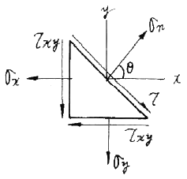
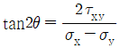
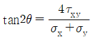
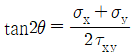
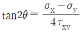
(정답률: 알수없음)
23. 그림과 같이 75×125mm인 균일 단면의 목재에 P = 3.5KN의 하중이 작용하고 있따. 경사면에서의 수직응력 σ와 전단응력 τ는 각각 약 몇 kPa 인가?
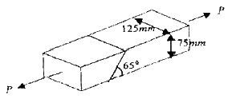
- σ = 338, τ = 158
- σ = 158, τ = 338
- σ = 143, τ = 307
- σ = 307, τ = 143
(정답률: 알수없음)
24. 그림과 같은 직사각형 단면기둥에 e = 2mm인 편심거리에 P = 100KN의 압축하중이 작용할 때 발생하는 최대응력 σmax는 몇 MPa 인가?
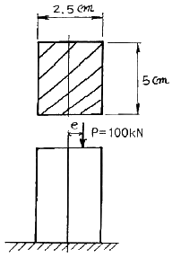
- 60.8
- 83.8
- 99.2
- 118.4
(정답률: 알수없음)
25. 그림과 같은 길이 4m, 단면 8cm × 12cm 인 단순보가 균일 분포하중 ω = 4KN/m을 받을 때 최대 굽힘응력을 약 몇 MPa 인가?
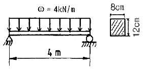
- 25.8
- 31.7
- 35.8
- 41.7
(정답률: 알수없음)
26. 그림과 같이 길이 2L인 외팔보의 중앙에 집중하중 P가 작용하면 자유단의 처짐은? (단, 보의 굽힘강성 EI는 일정하고, 자중은 무시한다.)
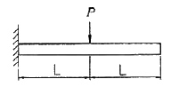
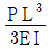
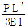
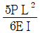
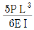
(정답률: 알수없음)
27. 그림과 같은 동력전달장치에서 모터가 400rpm의 속도로 3kW를 발생시킬 때, 모터 축의 지름이 4cm라면 이 축에 발생하는 비틀림 응력의 최대값은 약 몇 MPa 인가? (단, 축의 굽힘은 고려하지 않는다.)
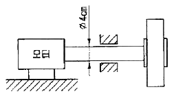
- 0.42
- 0.58
- 2.85
- 5.70
(정답률: 알수없음)
28. 포와송 비(Poisson's ratio) μ에 대한 설명 중 틀린 것은?
- 선형 탄성영역 내에서 포와송 비는 일정하다.
 이다.
이다.- 강철의 포와송 비는 등방성 재료인 경우 μ = 1/4 ~ 1/3 이다.
- 재료의 고유치로서 재료의 체적변화율 등의 물리적 특성과는 무관하다.
(정답률: 알수없음)
29. 지름 3cm의 연강봉을 17℃에서 벽에 고정한 후 50℃로 가열하였을 때 봉의 끝이 벽에 미치는 힘은 약 몇 kN인가? (단, 탄성계수 E = 210GPa, 선팽창계수 α = 11.5×10-6/℃ 이다.)
- 52.3
- 54.3
- 56.3
- 58.3
(정답률: 알수없음)
30. 그림과 같이 2개의 강선(wire) AC 및 BC에 2000N의 물체를 매달았을 때 강선 AC가 받는 힘은 약 몇 N 인가? (단, A와 B에서의 각도는 각각 40°, 60° 이다.)
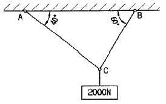
- 984
- 1015
- 1484
- 1555
(정답률: 알수없음)
31. 그림과 같이 균일분포하중 100N/m와 자유단에 집중하중 200N이 작용할 때의 최대 전단력은 몇 N 인가?
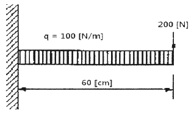
- 240
- 300
- 150
- 260
(정답률: 알수없음)
32. 지름 10mm의 재료가 32kN의 전단하중을 받아 0.006 rad의 전단변형률이 생겼다. 이 재료의 전단탄성계수 G값은 약 몇 GPa 인가?
- 37.9
- 47.9
- 57.9
- 67.9
(정답률: 알수없음)
33. 그림과 같이 지름 12mm, 허용 전단응력이 76MPa인 소켓렌치가 있다. 이 렌치에 가할 수 있는 최대 비틀림모멘트 T는 몇 N·m 인가?
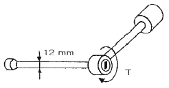
- 12.9
- 25.8
- 51.6
- 103.2
(정답률: 알수없음)
34. 길이가 2m 이고, 한 변의 길이가 5cm인 정사각형 단면의 주철재 기둥이 50kN의 압축하중을 받고 있다. 이 기둥의 수축량은 몇 mm 인가? (단, 주철의 탄성계수는 9 MN/cm2 이다.)
- 0.21
- 0.44
- 0.85
- 1.24
(정답률: 알수없음)
35. 원형 단면봉에 40kN의 인장하중이 작용한다. 봉의 인장강도가 420 MPa 이고 안전율을 5라 할 때, 이 봉의 지름은 최소 몇 cm 로 설계해야 하는가?
- 2.0
- 2.5
- 3.0
- 3.6
(정답률: 알수없음)
36. 그림과 같은 2축 응력상태에서 σx = 85 MPa, σy = 45 MPa 이 작용할 때 그 재료 내에 생기는 전단응력의 크기는 몇 MPa 인가?
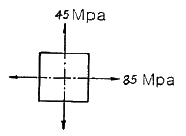
- 10
- 20
- 30
- 40
(정답률: 알수없음)
37. 그림과 같은 평면 도형에서 X축으로부터의 도심 위치
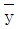
는 얼마인가?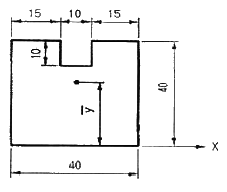
- 18
- 19
- 20
- 21
(정답률: 알수없음)
38. 그림과 같이 균일분포 하중을 받는 외팔보의 굽힘모멘트 선도의 모양으로 옳은 것은?
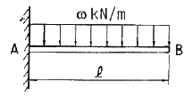
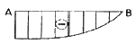
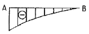
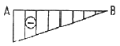
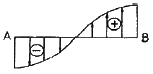
(정답률: 알수없음)
39. 그림과같이 집중하중 1750N을 받는 단순보에서 지점 B에서의 반력은 RB=500N 이다. 이때 지점 A로부터 집중하중의 작용점까지의 거리 L은 몇 m 인가?
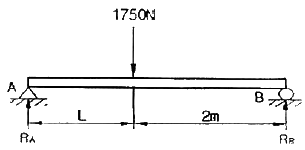
- 0.7
- 0.8
- 0.9
- 14.0
(정답률: 알수없음)
40. 탄성한도내에서 인장하중을 받는 봉에 발생한 응력이 2배가 되면 단위 체적당에 저장되는 탄성에너지는 몇 배가 되는가?
- 1/4배
- 1/2배
- 2배
- 4배
(정답률: 알수없음)
3과목: 기계설계 및 기계재료
41. 알루미늄-규소계 합금으로 알팩스라고 하며, 주조성은 좋으나 절삭성이 좋지 않은 것은?
- 라우탈
- 콘스탄틴
- 실루민
- 하이드로날륨
(정답률: 알수없음)
42. Fe-Mn, Fe-Si으로 탈산시킨 것으로 상부에 작은 수축관과 소수의 기포만이 존재하며 탄소 함유량이 0.15~0.3% 정도인 강은?
- 킬드강
- 세미킬드강
- 캡드강
- 림드강
(정답률: 알수없음)
43. 주철의 마우러의 조직도를 바르게 설명한 것은?
- Si와 Mn량에 따른 주철의 조직 관계를 표시한 것이다.
- C와 Si량에 따른 주철의 조직 관계를 표시한 것이다.
- 탄소와 흑연량에 따른 주철의 조직 관계를 표시한 것이다.
- 탄소와 Fe3C량에 따른 주철의 조직 관계를 표시한 것이다.
(정답률: 알수없음)
44. 다음 철강 재료 중 담금질 열처리에 의해 경화되지 않는 것은?
- 순철
- 탄소강
- 탄소 공구강
- 고속도 공구강
(정답률: 알수없음)
45. 다음 중 선팽창계수가 큰 순서로 올바르게 나열된 것은?
- 알루미늄 ＞ 구리 ＞ 철 ＞ 크롬
- 철 ＞ 크롬 ＞ 구리 ＞ 알루미늄
- 크롬 ＞ 알루미늄 ＞ 철 ＞ 구리
- 구리 ＞ 철 ＞ 알루미늄 ＞ 크롬
(정답률: 알수없음)
46. Fe-C계 상태도에서 3개소의 반응이 있다. 옳게 설명한 것은?
- 긍정-포정-편정
- 포석-공정-공석
- 포정-공정-공석
- 공석-공정-편정
(정답률: 알수없음)
47. 초소성 재료에 대한 설명으로 틀린 것은?
- 미세결정입자 초소성과, 변태 초소성으로 나누어진다.
- 고온에서의 높은 강도가 특징이다.
- 초소성 재료로서 Al-Zn 합금은 플라스틱 성형용 금형을 제작하는데 실용화되고 있다.
- 결정입자가 보통 아주 미세하다.
(정답률: 알수없음)
48. Ni에 Cr 13-21%와 Fe 6.5%를 함유한 우수한 내열, 내식성을 가진 합금은?
- 게이지용강
- 스테인레스강
- 인코넬
- 엘린바
(정답률: 알수없음)
49. 형상기억합금의 내용과 관계가 먼 것은?
- 형상 기억 효과를 나타내는 합금은 오스테나이트 변태를 한다.
- 어떠한 모양을 기억할 수 있는 합금이다.
- 소성변형된 것이 특정 온도 이상으로 가열하면 변형되기 이전의 원래 상태로 돌아가는 합금이다.
- 형상 기억합금의 대표적인 합금은 Ni-Ti 합금이다.
(정답률: 알수없음)
50. 용융 금속이 응고할 때 불순물이 가장 많이 모이는 곳으로 최후에 응고하게 되는 곳은?
- 결정입계
- 결정입내의 중심부
- 결정입내의 입계
- 결정입내
(정답률: 알수없음)
51. 유연성 커플링(flexible coupling)의 종류가 아닌 것은?
- 기어 커플링
- 롤러 체인 커플링
- 다이어프램 커플링
- 머프 커플링
(정답률: 알수없음)
52. 스프링의 변형에 대한 강성을 나타내는 것에 스프링 상수가 있다. 하중이 W[N] 일 때 변위량을 δ[mm] 라 하면 스프링 상수 k[N/mm]는?
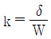
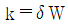
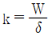
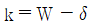
(정답률: 알수없음)
53. 볼나사(ball screw)의 장점에 해당되지 않는 것은?
- 마찰이 매우 적고, 기계효율이 높다.
- 예압에 의하여 치면놀이(backlash)를 작게 할 수 있다.
- 미끄럼 나사보다 내충격성 및 감쇠성이 우수하다.
- 시동 토크, 또는 작동 토크의 변동이 적다.
(정답률: 알수없음)
54. 성크 키의 길이가 150mm, 키에 발생하는 전단하중은 60kN, 키의 너비와 높이와의 관계는 b = 1.5h라고 할 때 허용 전단응력 20MPa라 하면 키의 높이는 약 몇 mm 이상이어야 하는가? (단, b의 키의 너비, h는 키의 높이이다.)
- 8.2
- 10.5
- 13.3
- 17.9
(정답률: 알수없음)
55. 지름 14mm의 연강봉에 8000N의 인장하중이 작용할 때 발생하는 응력은 약 몇 N/mm2 인가?
- 15
- 23
- 46
- 52
(정답률: 알수없음)
56. 기계구조물 등을 콘크리트 바닥에 설치하는데 사용되는 볼트에 해당하는 것은?
- 스테이볼트
- 아이볼트
- 나비볼트
- 기초볼트
(정답률: 알수없음)
57. 축지름 5cm, 저널 길이 10cm인 상태에서 300rpm으로 전동축을 지지하고 있는 미끄럼 베어링에서 P = 4000N의 레이디얼 하중이 작용할 때 베어링 압력은 약 몇 MPa 인가?
- 0.6
- 0.7
- 0.8
- 0.9
(정답률: 알수없음)
58. 7 kN·m의 비틀림 모멘트와 14 kN·m의 굽힘 모멘트를 동시에 받는 축의 상당 굽힘 모멘트는 몇 kN·m인가?
- 1⑤.83
- 211.65
- 15.65
- 31.46
(정답률: 알수없음)
59. 저널 베어링에서 사용되는 페트로프의 식에서 마찰저항과의 관계를 설명한 것으로 틀린 것은?
- 베어링 압력이 클수록 마찰저항은 커진다.
- 축의 반지름이 클수록 마찰저항은 커진다.
- 유체의 절대점성계수가 클수록 마찰저항은 커진다.
- 회전수가 클수록 마찰저항은 커진다.
(정답률: 알수없음)
60. 평벨트에 비해 V벨트 전동의 특징이 아닌 것은?
- 미끄럼이 적고, 속도비가 크다.
- 바로걸기로만 가능하다.
- 축간거리를 마음대로 할 수 있다.
- 운전이 정숙하고 충격을 완화한다.
(정답률: 알수없음)
4과목: 유압기기 및 건설기계일반
61. 유압회로에서 설정한 압력보다 높을 때 작동하는 밸브는?
- 방향제어 밸브
- 릴리프 밸브
- 분류 밸브
- 스로틀 밸브
(정답률: 알수없음)
62. 베인펌프의 특징으로 거리가 먼 것은?
- 작동유의 점도에 제한이 없다.
- 고장이 적고 보수가 용이하다.
- 베인의 마모에 의한 압력저하가 거의 일어나지 않는다.
- 펌프의 출력에 비하여 형상치수가 작다.
(정답률: 알수없음)
63. 축압기(어큐물레이터)의 주요 용도가 아닌 것은?
- 유압 에너지 축적
- 유독, 유해성 유체 수송
- 펌프 맥동율 흡수
- 유압유의 마찰열 회수
(정답률: 알수없음)
64. 유압 펌프에서 발생하는 현상으로 거리가 먼 것은?
- 맥동 현상
- 공동 현상
- 폐입 현상
- 채터링 현상
(정답률: 알수없음)
65. 그림의 회로도는 유량 제어밸브가 부착된 원격제어 불도저의 속도 제어 회로이다. 이 회로의 명칭은?
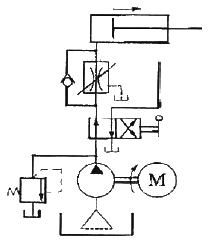
- 미터 인 회로
- 미터 아웃 회로
- 블리드 오프 회로
- 감속 회로
(정답률: 알수없음)
66. 프레스작업에서 일정시간 그대로 놓아두면 자중에 의하여 램이 하강한다. 자중에 의하여 하강하지 않도록 하기 위한 방법으로 가장 적합한 것은?
- 출압기회로를 구성한다.
- 로킹회로를 구성한다.
- 무부하회로를 구성한다.
- 압력설정회로를 구성한다.
(정답률: 알수없음)
67. 그림과 같은 유압 회로도에서 ④는 어떤 밸브인가?
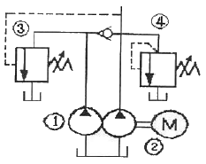
- 리듀싱 밸브
- 릴리프 밸브
- 감속 밸브
- 시퀀스 밸브
(정답률: 알수없음)
68. 2개의 액추에이터 A와 B가 있을 때 작동 순서의 제어에 사용되는 밸브는?
- 카운터밸런스 밸브
- 시퀀스 밸브
- 리듀싱 밸브
- 릴리프 밸브
(정답률: 알수없음)
69. 어떤 작동유에 압력을 1 MPa에서 4 MPa까지 증가시켰을 때 체적이 0.2[%] 감소했다고 한다. 이 때의 압축률(compressibility)은 약 몇 mm2/N 인가?
- 6.67 × 10-5
- 10-3
- 6.67 × 10-4
- 10-4
(정답률: 알수없음)
70. 그림의 유압회로의 명칭은?
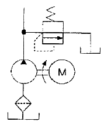
- 감압 회로
- 압력 설정 회로
- 시퀀스 회로
- 속도 조절 회로
(정답률: 알수없음)
71. 셔블(shovel)계의 굴차기는 전부장치(front attachment)를 교환할 수 있다. 분리 교환하여 사용되지 않는 것은?
- 크레인(crane)
- 포크 리프트(fork lift)
- 백호(back hoe)
- 드래그라인(drag line)
(정답률: 알수없음)
72. 건설기계 유압펌프에 종류에 속하지 않는 것은?
- 기어 펌프
- 베인 펌프
- 플런저 펌프
- 펠톤 펌프
(정답률: 알수없음)
73. 파 올린 토사는 양현에 계류한 토운선에 적재한 후 만재된 토운선을 예인선으로 예인하여 선박 항해에 지장이 없는 위치에 버리며, 전후 좌우의 이동은 4개의 앵커를 조종하면서 작업하는 준설선은?
- 크레인 준설선
- 그랩 준설선
- 디퍼 준설선
- 버킷 준설선
(정답률: 알수없음)
74. 타이어 형 도저의 접지 압력[kg/cm2]은 얼마 정도인가?
- 0.5 이하
- 1.0 ~ 1.5
- 2.5 ~ 3.5
- 4.0 ~ 5.5
(정답률: 알수없음)
75. 아스팔트 믹싱 플랜트(Asphalt mixing plant)에서 스크린 진동 등의 작동 과정에서 일으키는 먼지를 흡수하여 배제시키는 구조의 명칭은 무엇인가?
- 집진기
- 등급 분류기
- 건조기
- 아스팔트 캐틀
(정답률: 알수없음)
76. 굴삭 적재 사이클시간이 19[sec], 디퍼의 공칭용량이 5[m3], 작업효율이 0.9일 때 파워셔블의 작업량은? (단, 토량환산계수는 0.9, 디퍼계수는 1.0 이다.)
- 769[m3/hr]
- 76.9[m3/hr]
- 865[m3/hr]
- 767[m3/hr]
(정답률: 알수없음)
77. 기분무부하 상태에서 지게차의 주행시 전·후 안정도는 대략 몇 %의 구배에서 전도되어서는 안되는가?
- 6%
- 12%
- 18%
- 24%
(정답률: 알수없음)
78. 건설공사 또는 건설기술용역업무에 종사하는 자로서 건설기술자로 인정받으려는 자는 근무처, 경력, 학력 및 자격 등의 관리에 필요한 사항을 누구에게 신고해야 하는가?
- 국토해양부장관
- 대통령
- 지방자치단체장
- 건설기술협회장
(정답률: 알수없음)
79. 롤러 작업 시 지반이나 지층을 가압하는 방법으로만 구별하여 나열한 것은?
- 전압식가압, 진동식가압, 중압식가압
- 전압식가압, 고속식가압, 충격식가압
- 전압식가압, 저속식가압, 중압식가압
- 전압식가압, 진동식가압, 충격식가압
(정답률: 알수없음)
80. 로더의 방향전환 시 회전각을 크게 할 수 있어서 짧은 거리로 작업을 할 수 있고, 작업능률을 향상시킬 수 있는 조향방식은?
- 허리꺾기 조향방식
- 후륜 조향방식
- 조향클러치식 조향방식
- 일체식 조향방식
(정답률: 알수없음)